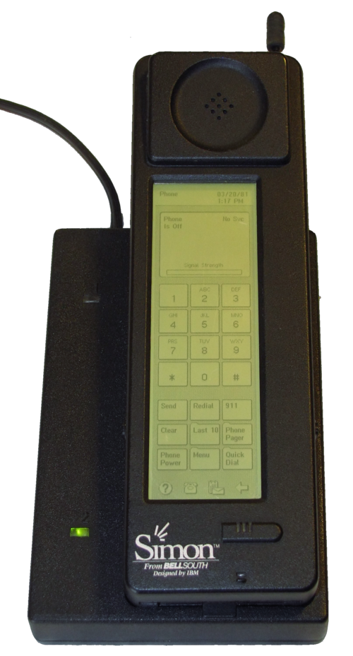
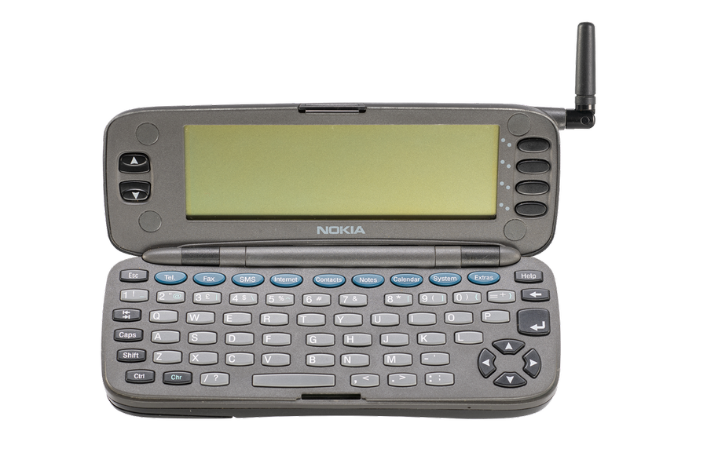
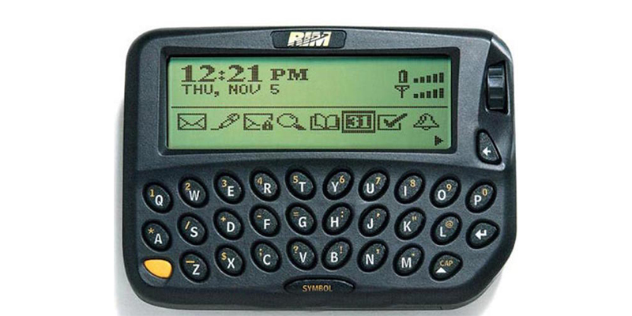
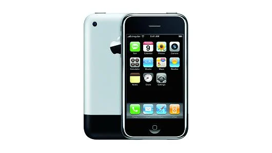
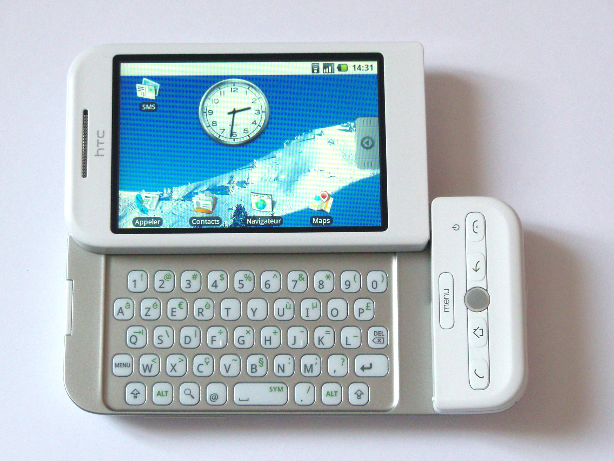
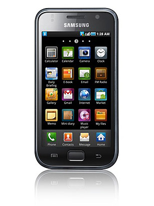
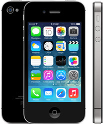
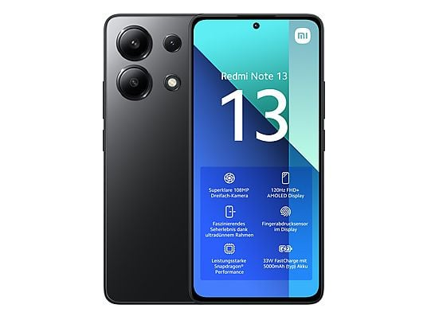
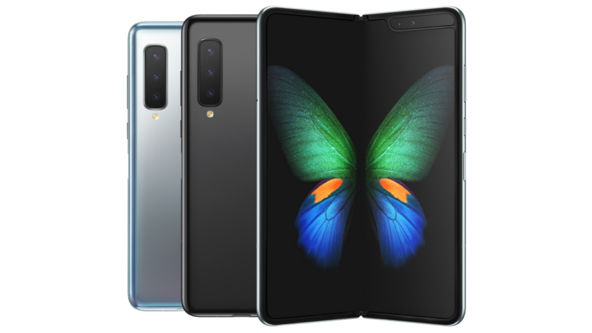

1992
IBM Simon

De eerste smartphone ter wereld met een touchscreen.
1996
Nokia 9000

Eerste telefoon met internet en een QWERTY-toetsenbord.
1999
BlackBerry 850

Introduceerde mobiele e-mail voor zakelijk gebruik.
2007
Apple iPhone

De revolutie: een apparaat zonder fysiek toetsenbord.
2008
HTC Dream

De eerste commerciële telefoon met Android.
2010
Samsung Galaxy S

Bracht Super AMOLED-schermen naar het grote publiek.
2011
iPhone 4S

Introductie van de spraakassistent Siri.
2013
4G/LTE

Sneller mobiel internet maakte streaming de norm.
2019
Galaxy Fold

De start van de markt voor opvouwbare schermen.
2023
Generatieve AI
AI wordt direct in de hardware van telefoons verwerkt.